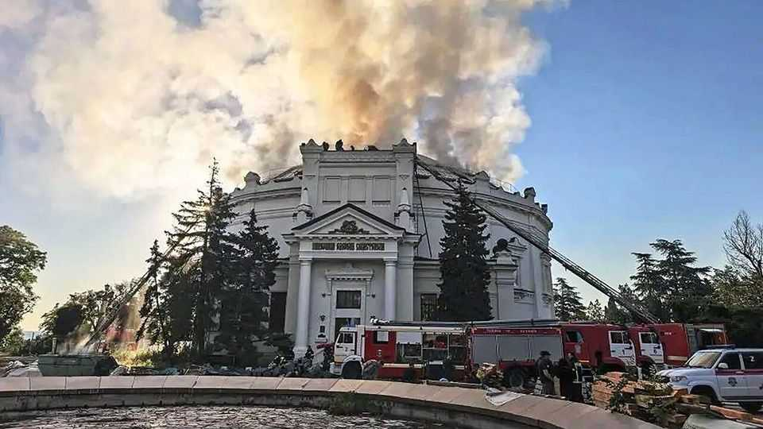

Russia’s Crimean conquest is turning into a deadly mess
Ukrainian drones have made the resort region a battlezone
June 25th 2026

Sirens did not wail in the early hours of June 21st in Feodosia, an attractive resort town on the east coast of the Crimean peninsula. There was only the buzzing of drones and the sounds of explosions minutes later. The warning systems were turned off some time ago, not because the peninsula is safe but because otherwise “sirens would be sounding 22 hours a day and nobody would get any sleep,” a senior territorial official recently told radio listeners.
Residents suspect the authorities are concerned less about their rest than about disrupting the tourist season. Preserving the façade of normality is becoming harder by the day. Crimea has been under constant attack for months: military units, railway stations and power plants are being hit, and sometimes residential buildings as well. The resort town of Yalta is an exception: it is sheltered by lush mountains and has no military targets. There, children jump from piers into the sea and there is hardly an empty sun-lounger on the beach. But the rest of Crimea has become a war zone.

On the night of June 20th Ukrainian drones hit power lines, blew up an oil terminal in Kerch and damaged a ferry transporting cargo, one of several recent hits on ferries. Ferry crossings have now been shut down, severing one of the peninsula’s main arteries of supply. Lorries can now get in only via a highway through the Donetsk, Zaporizhia and Kherson regions. But the land corridor is increasingly vulnerable to Ukrainian drones, as burned-out vehicles along the road testify. Last week Mykhailo Fedorov, Ukraine’s defence minister, said Crimea could “in effect become an island”.
Blackouts on the peninsula are increasingly frequent. On June 21st Crimea’s governor announced the most drastic step yet: a temporary halt to fuel sales at all petrol stations. (Sevastopol, which is administratively separate, announced a ban for June 22nd and 23rd, and may extend it.) Meanwhile, Ukrainian drones have been bringing the war deep into Russia itself. In the past few days they have hit refineries in Siberia and, with dramatic effect, in Moscow. Columns of smoke from the attacks in Moscow, on June 16th and again on the 18th, towered over residential areas; a video of an explosion blowing the lid of an oil tank high in the air went viral. Petrol is being rationed in more than half of Russia’s regions.
The attacks on Crimea are especially significant. Crimea serves as Russia’s bridgehead and a supply base for its army, though Ukrainian drone attacks have chased what is left of its Black Sea fleet to more distant ports. It also has enormous spiritual importance. Russia’s nearly bloodless conquest of the territory in 2014 was a triumphant moment of Vladimir Putin’s imperial ambitions, and greatly boosted his popularity. The jewel of the Russian and Soviet empires, it symbolised the country’s resurgence. At the time Mr Putin called it “the spiritual source of the formation of the multifaceted yet unified Russian nation”. He has been largely silent about Ukraine’s recent attacks, as have the state media.
Crimeans have been deprived not just of petrol and electricity, but of their faith in the state’s power to solve problems. Ordinary people felt suddenly vulnerable, explains a local mother. The conversation is punctuated by automatic weapons fire outside: mobile air-defence teams are trying to shoot down drones. Her traumatised 14-year-old son wants to leave, she says, but she tells him that as Crimean Tatars (the territory’s indigenous population), they must remain: “It is our only homeland.”

Apart from the Tatars, only a minority of the peninsula’s residents resisted the annexation. Many, especially pensioners who remembered the Soviet era, welcomed it: Russia promised investment and more social benefits. A decade ago businessmen in Sevastopol wanted to reinvent the city, centred on a naval base, by developing winemaking, commercialising the port or mining crypto. Now, “people no longer see any prospects for the future,” says Nikolai Chestiakov, a resident. “Those who have money are trying to buy property in other [Russian] regions and moving their families out.”
While Sevastopol has emptied, Dzhankoi, a sleepy railway town where passengers used to buy melons en route to coastal resorts, has boomed. Military personnel use it as a staging point for the Kherson region. Soldiers are filling the hotels and supporting local trade. “Thank God the army is here,” says Mikhail, who owns a kebab shop. “The guys come, they relax—business is good.” The drawback is that Dzhankoi has become a target. A recent drone attack injured several civilians in a passenger train, and five died when a drone hit a residential building.
Ukrainian attacks have undermined Crimeans’ confidence in the army’s ability to defend them, but there is no sign they have dented allegiance to Russia. Some see the possibility of a Ukrainian return as a nightmare: Ukrainian officials have threatened retribution. They also fear being denounced for disloyalty by fellow residents. State counter-espionage propaganda is even more aggressive in Crimea than in other front-line regions, such as Belgorod or Kursk.
“Working for the enemy? Ready to sell out your homeland? Waiting for instructions from your handler? Then we’re coming for you,” Crimean radio announces in a programme titled “Comrade Major, Please Investigate!” Anyone taking photographs or asking questions in public is seen as a potential spy. A resident of Kerch who photographed a fuel tanker and forwarded it to a friend abroad was detained this month and could face charges of treason.
Crimea is not the only place in Russia where frustration with the war is rising. Members of the country’s ruling elite increasingly see it as a dead end. The government’s promises that the grinding near-stalemate in Donbas would give way this spring to rapid Russian advances have proven empty, like those in earlier years. The highly visible Ukrainian strikes on refineries in St Petersburg and Moscow have forced ordinary Russians to reckon with the war’s consequences. Internet blockages engineered by security services have interfered with citizens’ daily lives.
Surveys by the state-run pollster in the past few months have repeatedly shown Mr Putin’s popularity falling; the levels cannot be trusted, but the decline is suggestive. Secret focus groups conducted in late May by United Russia, Mr Putin’s party, found that most participants wanted the fighting to end, with or without a Russian victory. The president’s biggest problem is not rising casualties, damage to Russia’s economy or worsening repression, but the fact that he has nothing to show for his war. The perception of failure and weakness undermines his legitimacy. As Russian history shows, leaders perceived as weak are rarely forgiven.
For now, the main sentiment in Crimea and across Russia is exhaustion. Even those who support Russia cannot see the purpose of the war. “We don’t need any grand ambitions, we don’t need anyone trying to make things better. We just want the sun to rise in the morning, tourists to come in summer,” says Tatyana, a tour guide in Feodosia. “We are so tired of everything else.” ■
To stay on top of the biggest European stories, sign up to Café Europa, our weekly subscriber-only newsletter.